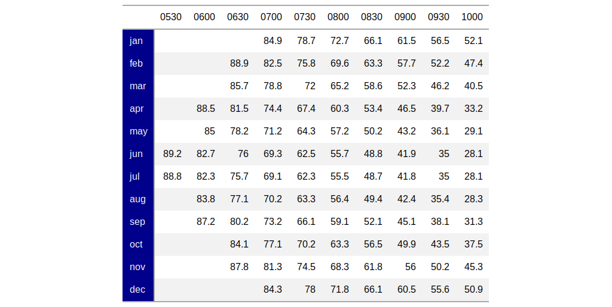
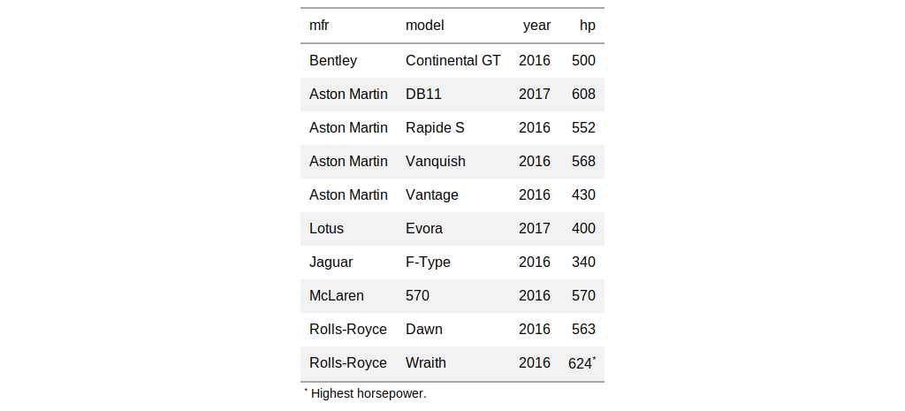
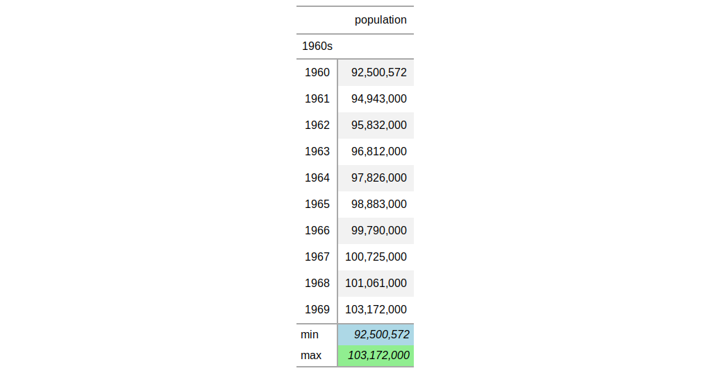

These helper functions are used to target individual cells in different
locations (e.g., the stub, the column labels, the title, etc.). They can be
used in any of these functions (which all have a locations argument):
tab_footnote(), tab_style(), and
text_transform() Furthermore, multiple locations can be
targeted by enclosing several cells_*() helper functions in a list.
cells_title(groups = c("title", "subtitle")) cells_column_labels(columns, groups) cells_group(groups) cells_stub(rows = NULL) cells_data(columns = NULL, rows = NULL) cells_summary(groups = NULL, columns = NULL, rows = NULL)
Arguments
| columns, rows, groups | either a vector of names, a vector of
indices, values provided by |
|---|
Value
a list object of class location_cells.
Details
The following helper functions can be used to target cells (roughly in order from the top to the bottom of a table):
cells_title(): targets the table title or the table subtitle depending on the value given to thegroupsargument ("title"or"subtitle").cells_column_labels(): targets labels in the column labels (thecolumnsargument) or the spanner column labels (thegroupsargument) in the table's column labels part.cells_group(): targets the row group labels in any available row groups using thegroupsargument.cells_stub(): targets row labels in the table stub using therowsargument.cells_data(): targets data cells in the table field using intersections ofcolumnsandrows.cells_summary(): targets summary cells in the table field using thegroupsargument and intersections ofcolumnsandrows.
Figures





Examples
# Use `sp500` to create a gt table; add # a header (with a title and a subtitle), # and then add a footnote to the subtitle # with `tab_footnote()` and `cells_title()` # in `locations` tab_1 <- sp500 %>% dplyr::filter( date >= "2015-01-05" & date <="2015-01-10" ) %>% dplyr::select( -c(adj_close, volume, high, low) ) %>% gt() %>% tab_header( title = "S&P 500", subtitle = "Open and Close Values" ) %>% tab_footnote( footnote = "All values in USD.", locations = cells_title( groups = "subtitle") ) # Use `sza` to create a gt table; add a # header and then add footnotes to the # column labels with `tab_footnote()` and # `cells_column_labels()` in `locations` tab_2 <- sza %>% dplyr::filter( latitude == 20 & month == "jan" & !is.na(sza) ) %>% dplyr::select(-latitude, -month) %>% gt() %>% tab_footnote( footnote = "True solar time.", locations = cells_column_labels( columns = vars(tst)) ) %>% tab_footnote( footnote = "Solar zenith angle.", locations = cells_column_labels( columns = vars(sza)) ) # Use `pizzaplace` to create a gt table # with grouped data; add a summary with the # `summary_rows()` function and then add a # footnote to the "peppr_salami" row group # label with `tab_footnote()` and with # `cells_group()` in `locations` tab_3 <- pizzaplace %>% dplyr::filter( name %in% c("soppressata", "peppr_salami") ) %>% dplyr::group_by(name, size) %>% dplyr::summarize( `Pizzas Sold` = n() ) %>% gt(rowname_col = "size") %>% summary_rows( groups = TRUE, columns = vars("Pizzas Sold"), fns = list(TOTAL = "sum"), formatter = fmt_number, decimals = 0, use_seps = TRUE ) %>% tab_footnote( footnote = "The Pepper-Salami.", cells_group(groups = "peppr_salami") ) # Use `sza` to create a gt table; color # all of the `month` values in the table # stub with `tab_style()`, using `cells_stub()` # in `locations` (`rows = TRUE` targets # all stub rows) tab_4 <- sza %>% dplyr::filter( latitude == 20 & tst <= "1000") %>% dplyr::select(-latitude) %>% dplyr::filter(!is.na(sza)) %>% tidyr::spread(key = "tst", value = sza) %>% gt(rowname_col = "month") %>% fmt_missing( columns = TRUE, missing_text = "" ) %>% tab_style( style = cells_styles( bkgd_color = "darkblue", text_color = "white"), locations = cells_stub(rows = TRUE) ) # Use `gtcars` to create a gt table; add # a footnote that targets a single data cell # with `tab_footnote()`, using `cells_data()` # in `locations` (`rows = hp == max(hp)` will # target a single row in the `hp` column) tab_5 <- gtcars %>% dplyr::filter(ctry_origin == "United Kingdom") %>% dplyr::select(mfr, model, year, hp) %>% gt() %>% tab_options(footnote.glyph = "*") %>% tab_footnote( footnote = "Highest horsepower.", locations = cells_data( columns = vars(hp), rows = hp == max(hp)) ) # Use `countrypops` to create a gt table; add # some styling to the summary data cells with # with `tab_style()`, using `cells_summary()` # in `locations` tab_6 <- countrypops %>% dplyr::filter( country_name == "Japan", year < 1970) %>% dplyr::select(-contains("country")) %>% dplyr::mutate( decade = paste0(substr(year, 1, 3), "0s") ) %>% dplyr::group_by(decade) %>% gt( rowname_col = "year", groupname_col = "decade" ) %>% fmt_number( columns = vars(population), decimals = 0 ) %>% summary_rows( groups = "1960s", columns = vars(population), fns = list("min", "max"), formatter = fmt_number, decimals = 0 ) %>% tab_style( style = cells_styles( text_style = "italic", bkgd_color = "lightblue"), locations = cells_summary( groups = "1960s", columns = vars(population), rows = 1) ) %>% tab_style( style = cells_styles( text_style = "italic", bkgd_color = "lightgreen"), locations = cells_summary( groups = "1960s", columns = vars(population), rows = 2) )